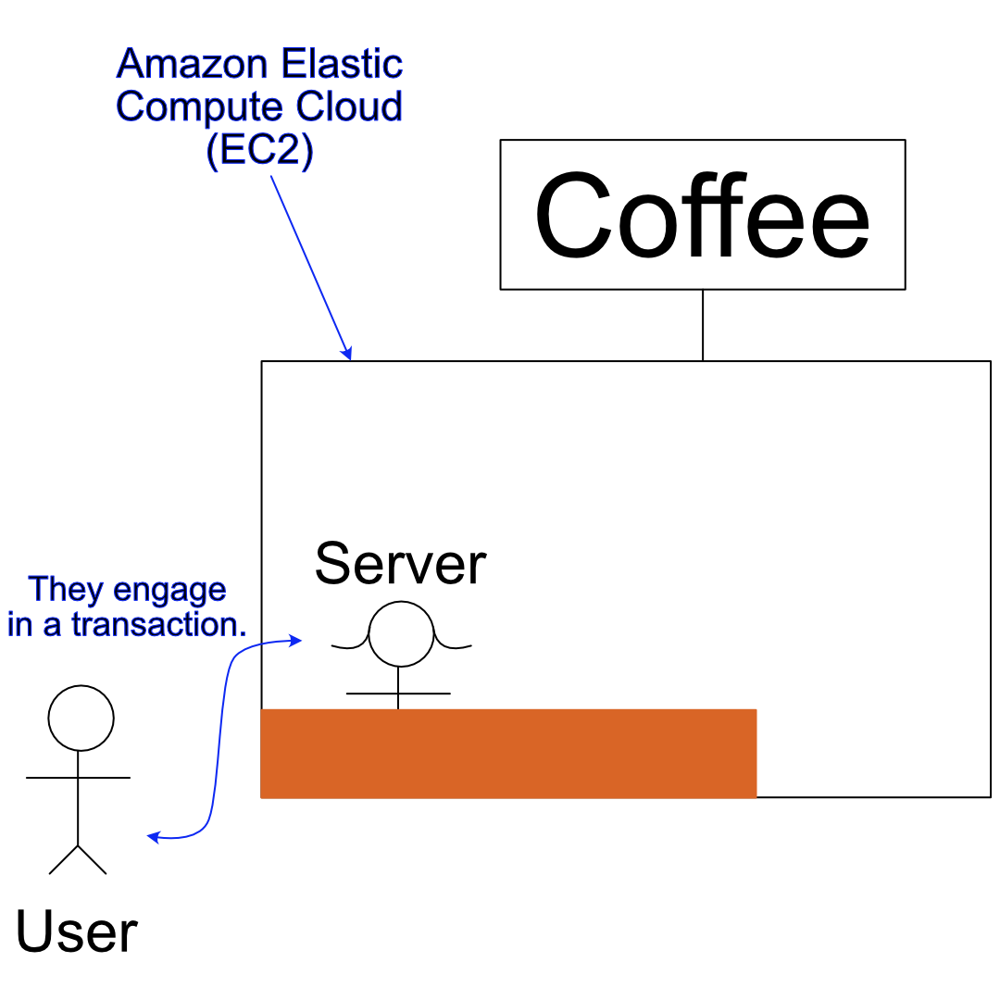
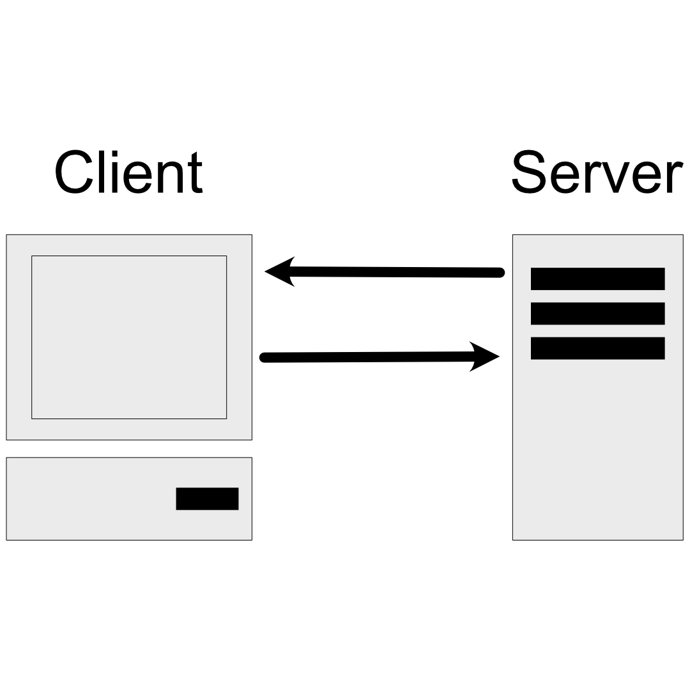

[
Index
]
Module 1: Introduction

User makes a request, server responds to that request.
AWS contains many resources that can handle this request.
Main idea behind AWS:
You only pay for what you use!
What is Cloud Computing?
The on-demand delivery of IT resources over the Internet with pay-as-you-go pricing.
"On demand delivery":
Resources are available when you need them. Get resources, use them, give them back.
"IT resources":
Different resources to run the business. Builds heavily on the:
Undifferentiated heavy lifting of IT
Tasks that are common, repetitive, and time-consuming → AWS wants to take care of that. Make you focus on your business.
"Over the Internet":
You can access the resources anywhere in a safe way.
"Pay-as-you-go":
Pay only for what you need, when you use it.
What is a Client-Server Model?

Client can be...
Server can be...
Desktop Application
Web Application
Amazon Elastic Compute Cloud
(Amazon EC2); a virtual server
in the cloud.
Deployment Models for Cloud Computing
When selecting a strategy, many factors must be considered; for example:
Machine storage capacity.
Required hardware components.
Legacy requirements.
Management tools.
etc.
Three main models:
On-premise.
Hybrid.
Cloud-based.
On Premises
Deploy resources by using virtualization and resource management tools.
Increase resource utilization by using application management and virtualization technologies.
Hybrid
Connect cloud-based resources to on-premises infrastructure.
Integrate cloud-based resources with legacy IT applications.
Cloud resources are connected to in-premise infrastructure.
Benefits of Cloud Computing
Trade upfront expense for variable expense:
Upfront expense:
Computers, physical servers, etc., i.e., resources in which inverstment must be made beforehand.
Variable expense:
Only pay for what you use, when you use it.
Stop spending money to run and maintain data centers:
Only use what you need at a given time → pay only for what you use.
Stop guessing capacity:
Only use what you need at a given time → pay only for what you use.
Benefit from massive economies of scale:
AWS has a lot of customers, so they can offer lower prices than you can get on your own.
Increase speed and agility:
Easier to develop and deploy.
New resources can be accessed in minutes.
Provides more time to experiment and innovate.
Go global in minutes:
AWS enables applications to be deployed around the world in minutes.
Low latency → Applications can be accessed and deployed almost instantly.